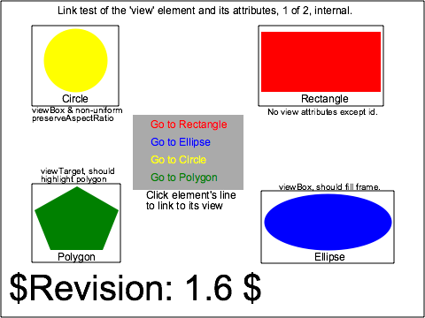

linking-uri-01-b |
||
| SVG Image | INKSCAPE Image | PNG Image |

|
 | |
|
||||||||||||
Verify the capability to handle links to 'view' elements, and the permissible attributes on those elements. All of the links in this test case are internal, i.e., to 'view' elements within the SVG file. This test is one of a pair, with linking-uri-02-b, which is substantially identical except that its links target view elements in this test case, i.e., they are external).
In the four quadrants of the initial picture are four graphical objects. Clockwise from upper right, they are a red rectangle, blue ellipse, green polygon (pentagon), and yellow circle. Each is labelled and tightly boxes with a rectangular frame. Each is referenced by an associated 'view' element, with attributes per the labels in the picture.
In the center is a gray box with four lines of text, each of which says "Go to" followed by Rectangle, Ellipse, Polygon, and Circle, respectively. Each of these is contained within an 'a' element, whose xlink:href names the respective 'view' element of the respective graphical object.
Activating the Rectangle link should cause no change in the picture. Its 'view' element has no attributes (other than id), so the correct view in the frame is of the parent 'svg' element, which is the whole picture.
Activating the Ellipse link should cause the initial picture to be replaced in the frame by the whole ellipse element, uniformly scaled, with its boxing rect just inside the frame.
Assuming that a "back" action has been requested, activating the Polygon link should cause the initial picture to remain unchanged within the frame, except that the polygon is "highlighted" (the meaning of highlighted is not further specified).
Assuming that a "back" action has been requested, activating the Circle link should cause the initial picture to be replaced in the frame by the whole whole element, non-uniformly scaled so that it is stretched horizontally into an ellipse, with its boxing rect just inside the frame.
There are several reference images associated with this test case. The first illustrates the correct initial state of the rendered SVG file, which should also be the correct picture after the Rectangle link is executed. The second, third, and fourth illustrate the correct images as described above after respectively the Ellipse, Polygon, and Circle links are activated. (Note. This harness does not yet provide access to multiple PNGs; the PNG for the initial view is shown.)
The test uses the 'rect', 'circle', 'ellipse', and 'polygon' elements, as well as basic fill (solid simple colors), stroke (black and colored 1-pixel lines), font-family (Arial) and font-size properties.